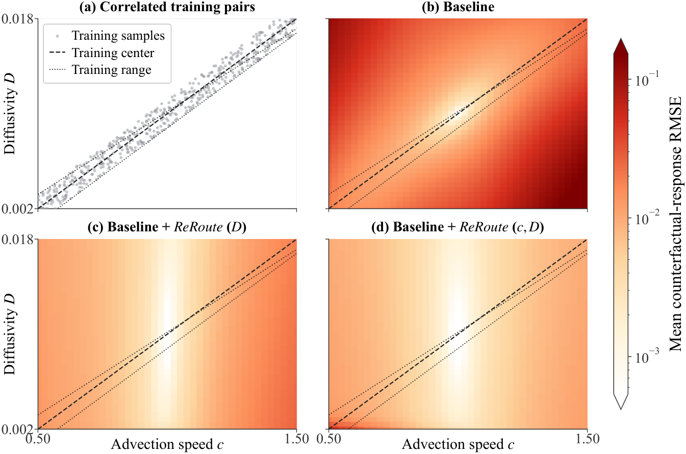
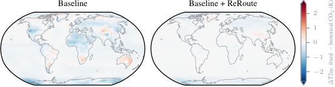

The core causal identification argument for the ReRoute construction, under explicit structural assumptions, is machine-checked in Lean.
Abstract
Many scientific questions require reasoning about what was never observed: What if the conditions, interventions, or history had been different? Models can predict accurately on observed data yet fail on such what-if queries when correlated inputs are varied independently. A common remedy is to add controlled simulation data in which these factors are explicitly disentangled, but this requires access to a simulator, can be computationally expensive, and inherits the simulator's modeling assumptions. We introduce ReRoute, a framework for targeted scientific what-if prediction that combines factual data with partial mechanistic knowledge, without requiring controlled intervention data for adaptation. ReRoute fixes the queried input of a pretrained backbone to a reference value, reintroduces its variation through a known mechanistic pathway, and fine-tunes on the original factual data, while leaving downstream effects to the learned dynamics. We provide a causal identification result for this construction under explicit structural assumptions, with the core argument machine-checked in Lean. After showing that ReRoute achieves highly accurate counterfactual predictions in a controlled advection-diffusion system where exact responses are available, we turn to state-of-the-art climate emulation. On held-out coupled-climate interventions, ReRoute reduces aggregate climate error by 18.2-31.8% under severe CO$_2$ distribution shifts while preserving skill under standard conditions, at a small fraction of the cost of retraining on additional controlled simulations, without even accounting for the substantial expense of generating such data. Finally, on an emulator trained from historical ERA5 reanalysis, where no counterfactual reference exists, ReRoute preserves substantially more of the surface warming implied by the observed boundary conditions under a fixed-CO$_2$ counterfactual.
Problem
Scientific emulators trained on data with correlated drivers can predict well on observed data but fail on what-if queries that vary one driver independently. Adding controlled simulation data that disentangles these factors needs a simulator, can be costly, and inherits the simulator's assumptions.
Approach
ReRoute fixes the queried input of a pretrained backbone to a reference value and reintroduces its variation through a known mechanistic pathway. The combined model is fine-tuned only on the original factual data, and downstream effects are left to the learned dynamics. A causal identification result is proved under explicit structural assumptions, with the core argument machine-checked in Lean. The method is evaluated on advection–diffusion with a Fourier neural operator, on ACE2 climate emulation, and on an ERA5-trained emulator.
Results
In advection–diffusion, ReRoute cuts counterfactual response error by up to 89.6% far from the training support. On held-out ACE2 interventions it reduces aggregate climate error by 18.2–31.8% under severe CO2 shifts while preserving standard skill. On the ERA5-trained emulator it preserves more near-surface warming under a fixed-CO2 counterfactual and gives a tropical cyclone climatology closer to ERA5.

Figure 6: ReRoute separates strongly correlated advection and diffusion controls across the full parameter grid. The left panel shows the 512 parameter pairs used for training; dashed and dotted lines denote their center and range. The remaining panels show mean counterfactual-response RMSE after 100 rollout steps for the pretrained baseline, ReRoute applied only to diffusivity D , and ReRoute app

Figure 4: ReRoute preserves surface warming under fixed CO 2 in ACE2-ERA5, i.e. near-zero values in the heatmap. Shown is the change in time-mean near-surface temperature when CO 2 is held fixed at its 1940 value instead of following the historical trajectory, while retaining the other historical boundary conditions such as SST and sea-ice. The ACE2-ERA5 baseline exhibits widespread cooling, indic